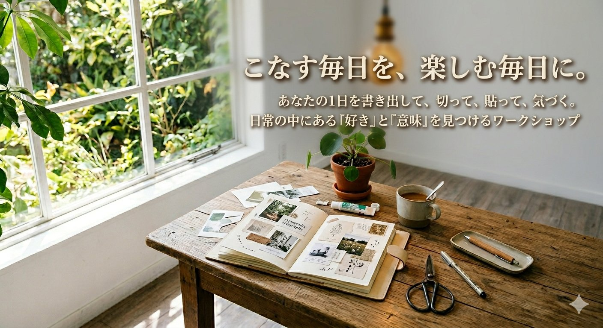
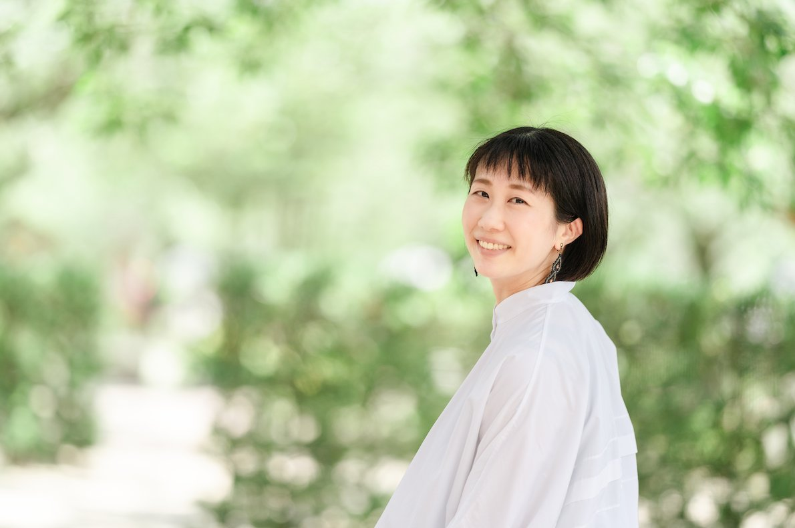

毎日、いろんなことに追われて、
気づいたら自分のことを
後回しにしていませんか。
晴れの日には晴れの日の、
雨の日には雨の日の過ごし方があるように。
同じ24時間の中に、
まだ見つけていない「自分」が
隠れているかもしれません。
こんな感覚、ありませんか
一つでも当てはまったら、
このワークショップはきっと意味のある2時間になります。
お仕事をしている方、子育て中の方、どなたでもどうぞ。
立場や状況に関わらず、この感覚がある方への時間です。
このワークショップで起こること
あなたの平日の24時間を、ぐるっと書き出してみます。仕事の時間も、家事の時間も、自分のための時間も、全部まるごと一枚のタイムラインに。
そこから、ピンときた写真を雑誌から切って、貼って、選んで。頭で考えるだけじゃない、手と感覚を使ったクラフトの時間です。
あなたの「いつもの1日」を、わたしと一緒に、ちょっと違う角度から眺めてみます。気づいたら、いつもの毎日が、少しだけ違う顔をして見えているかもしれません。
最後には、明日からの暮らしに、
小さく、ひとさじだけ加えてみたくなる
「何か」を持って帰ってもらいます。
大きな決断や、行動宣言は必要ありません。ただ、今ある毎日との付き合い方が、少し変わる。そんな2時間です。
頭だけで考えるのではなく、直感や心にグッとくる感覚を大事にすることが、わたしはとても大事だと感じています。だから、ぜひあなたにもその感覚を味わってほしいと思っています。
こんな時間にしたいと思っています
転職活動でも、自己分析講座でもありません。
「本当の自分」を探しに行くのでも、
「理想の人生」を新しく描くのでもなく——
今すでにある、あなたの暮らしの中に、
まだ気づいていない意味や、小さな喜びを
見つけにいく時間です。
仕事も、家事も、子育ても、自分の時間も。
全部をまるごと「あなたの人生」として、
わたしと一緒に、あらためて眺めてみませんか。
ファシリテーター

臼井泰子（うっしー）
国家資格キャリアコンサルタント。大手人材系企業で300社以上の企業の採用サポートに従事した経験を生かし、個人のライフキャリアに寄り添ったカウンセリングを実施。現在は、「もっと自分らしくしなやかにありたい」女性へのコンサルティングをメインに活動中。“答えはその人の中にある”がモットー。
開催概要
下記フォームよりお申込みください。
定員になり次第、締め切らせていただきます。